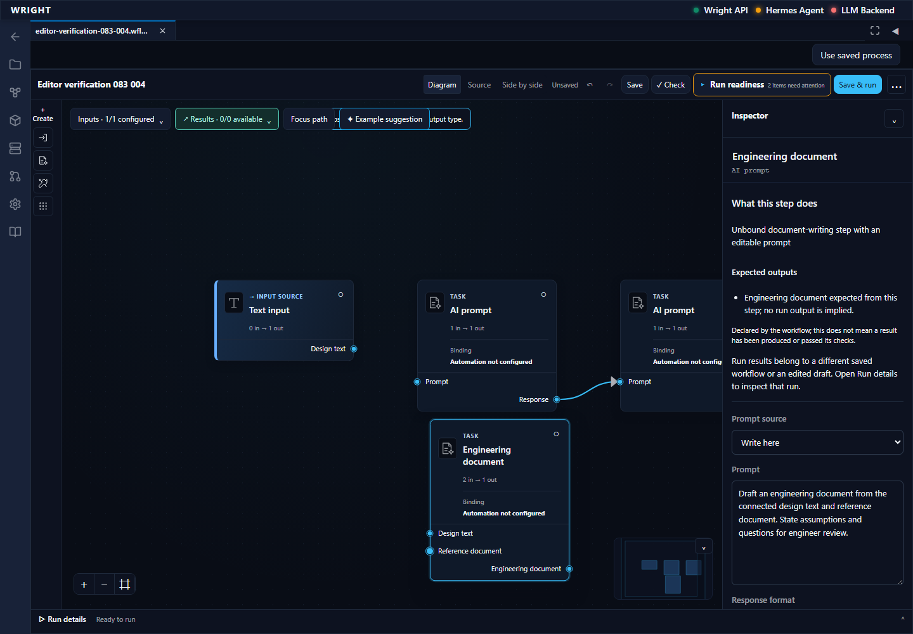
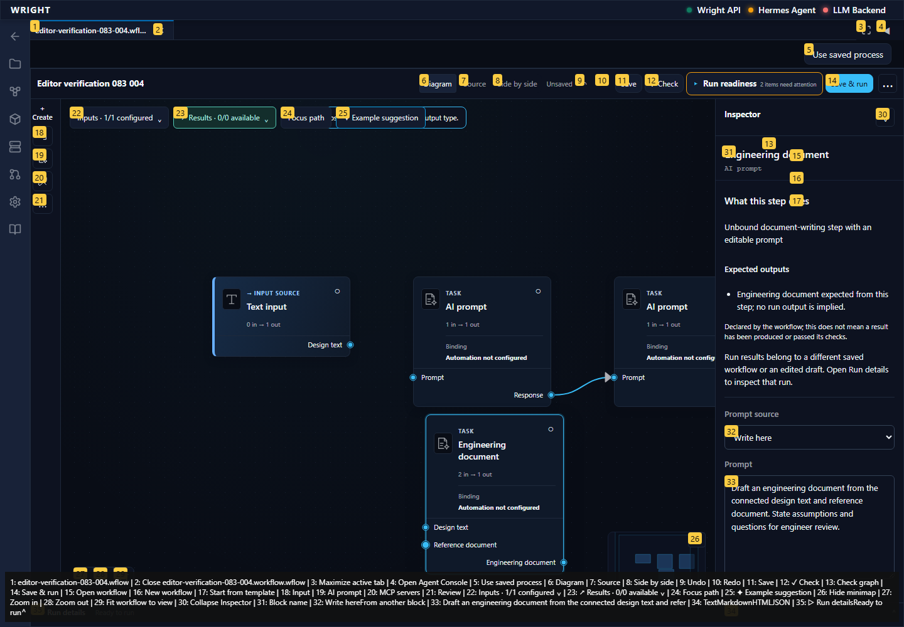
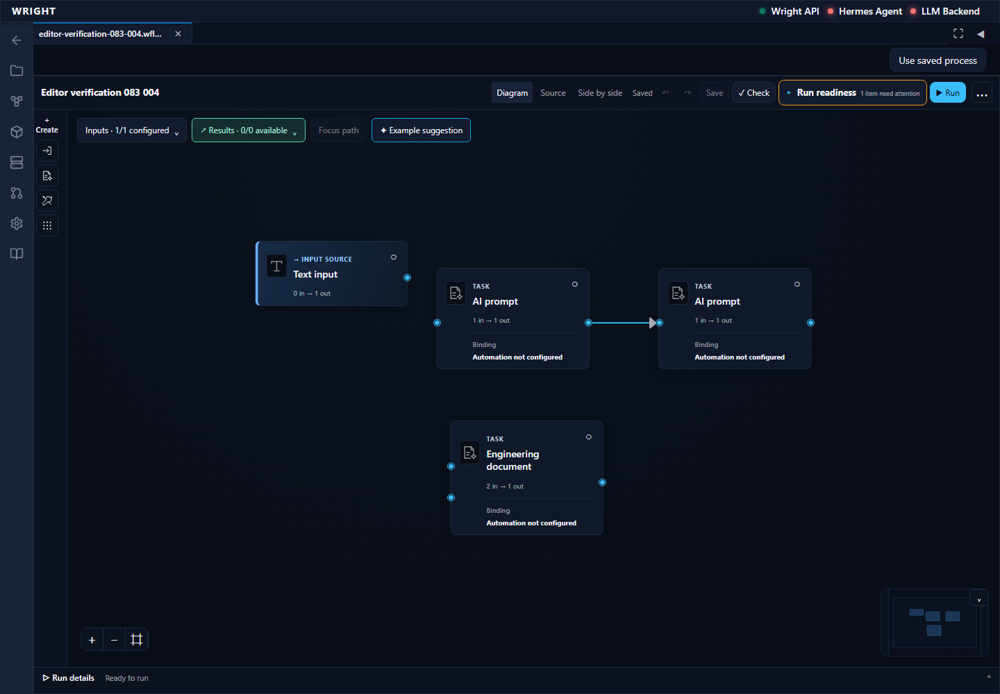
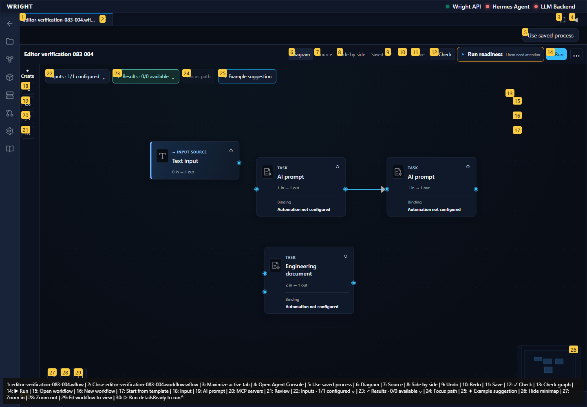

Continue the newly saved scratch workflow through type rejection, layout persistence, zoom and concurrent-save protection. No process execution or engineering review.
Status: blocked
A connection diagnostic is visible and the semantic digest is unchanged.
Expected: Explain incompatible types without changing the accepted graph.
Actual: A connection diagnostic is visible and the semantic digest is unchanged.
raw 
annotated 
First unexpected state retained; no execution or review submitted.
Expected: Editor action succeeds without guesses or workarounds.
Actual: expect(locator).toHaveAttribute(expected) failed Locator: locator('[data-testid="retained-workspace-workflow-panel"][aria-hidden="false"]').getByTestId('workflow-recovery-concept') Expected: "sha256:549eca46bfc5c58df85e6b69cc1761e7c33356c2917900202aae7070c28e6d8d" Received: "sha256:bc3ed7646ba4845f713ad7297fc1664795040674d71b68b7798a3fc83d3d48ad" Timeout: 60000ms Call log: - Expect "to.have.attribute.value" with timeout 60000ms - waiting for locator('[data-testid="retained-workspace-workflow-panel"][aria-hidden="false"]').getByTestId('workflow-recovery-concept') - locator resolved to <section aria-busy="true" data-surface-state="loading" data-testid="workflow-recovery-concept" class="workflow-recovery recovery-boundary-state">…</section> - unexpected value "null" 115 × locator resolved to <section data-revision="3" data-testid="workflow-recovery-concept" class="workflow-recovery workflow-recovery--redesign" data-layout-digest="sha256:bc3ed7646ba4845f713ad7297fc1664795040674d71b68b7798a3fc83d3d48ad" data-semantic-digest="sha256:1232c25f705f6367197fce63096c772b1242861200d5b7739cc7a1631f2e4a9a">…</section> - unexpected value "sha256:bc3ed7646ba4845f713ad7297fc1664795040674d71b68b7798a3fc83d3d48ad"
raw 
annotated 